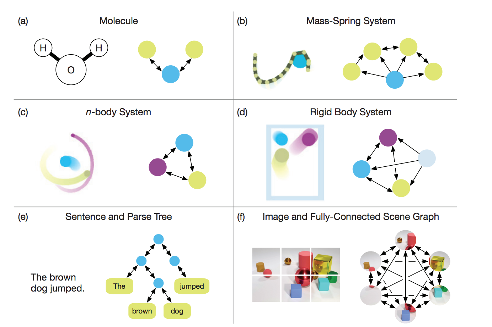
Peter W. Battaglia, Jessica B. Hamrick, Victor Bapst, Alvaro Sanchez-Gonzalez, Vinicius Zambaldi, Mateusz Malinowski, Andrea Tacchetti, David Raposo, Adam Santoro, Ryan Faulkner, Caglar Gulcehre, Francis Song, Andrew Ballard, Justin Gilmer, George Dahl, Ashish Vaswani, Kelsey Allen, Charles Nash, Victoria Langston, Chris Dyer, Nicholas Hees, Daan Wierstra, Pushmeet Kohli, Matt Botvinick, Oriol Vinyals, Yujia Li, Razvan Pascanu
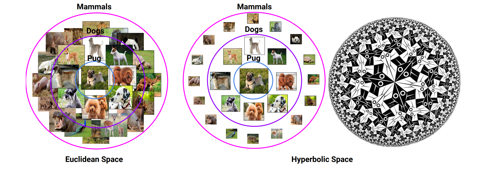
Caglar Gulcehre, Misha Denil, Mateusz Malinowski, Ali Razavi, Razvan Pascanu, Karl Moritz Hermann, Peter Battaglia, Victor Bapst, David Raposo, Adam Santoro, Nando de Freitas
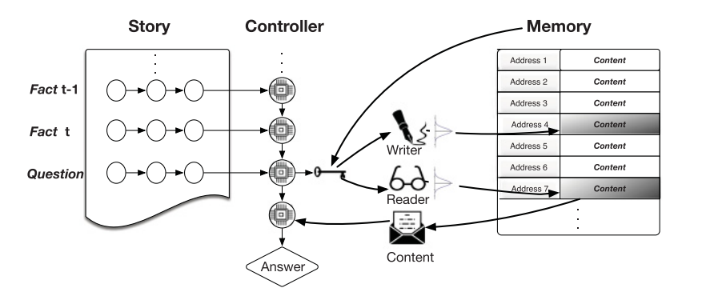
Caglar Gulcehre, Sarath Chandar, Kyungyhun Cho, Yoshua Bengio
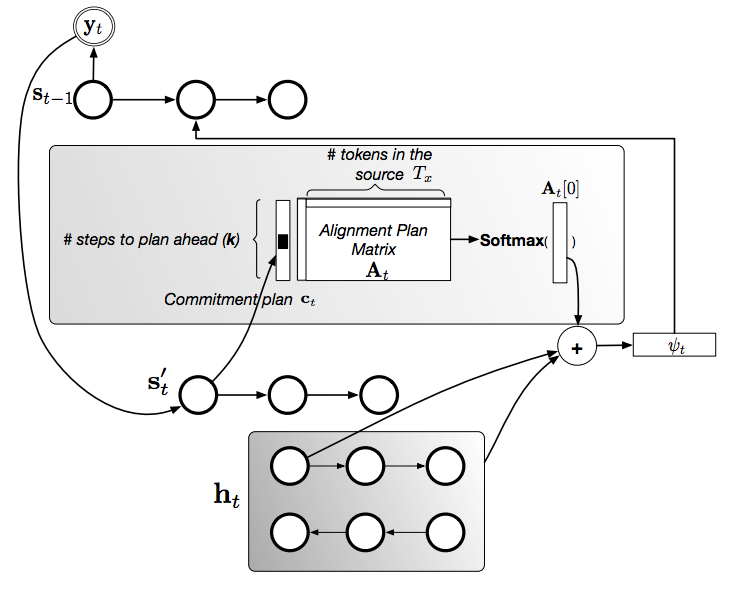
Francis Dutil+, Caglar Gulcehre+, Adam Trishler, Yoshua Bengio (+ indicates equal contribution)
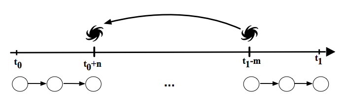
Caglar Gulcehre, Sarath Chandar, Yoshua Bengio
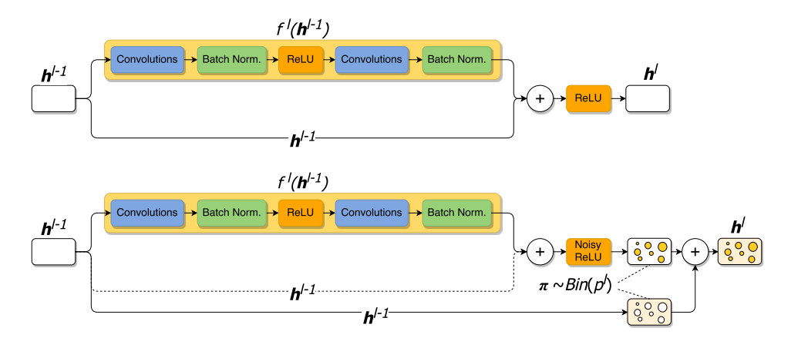
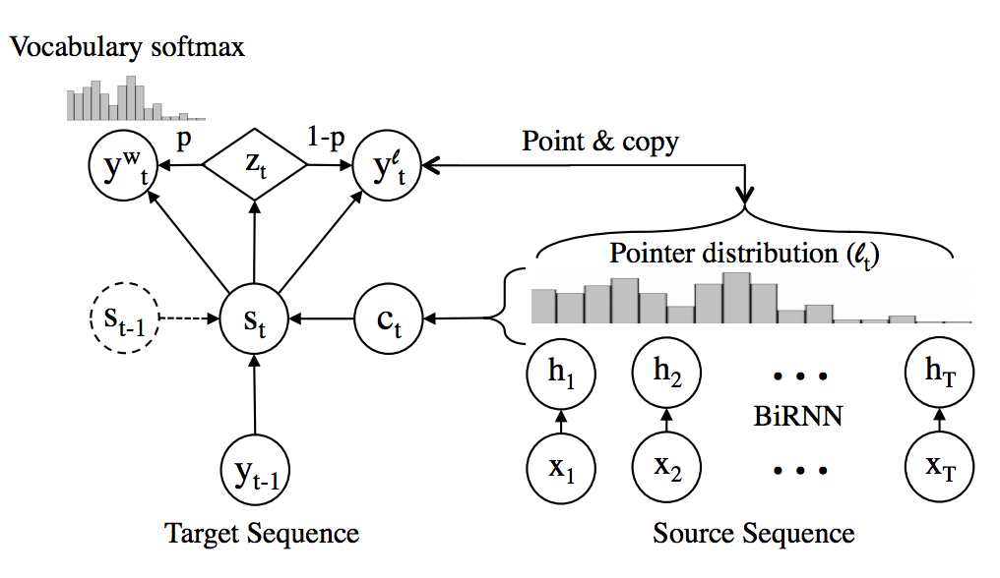
**Caglar Gulcehre, Sungjin Ahn, Ramesh Nallapati, Bowen Zhou, Yoshua Begio
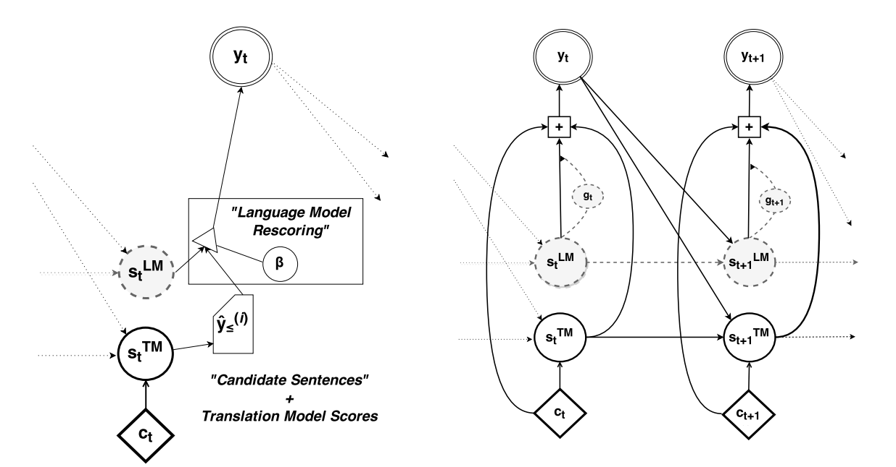
Caglar Gulcehre, Orhan Firat, Kelvin Xu, Kyunghyun Cho, Yoshua Bengio
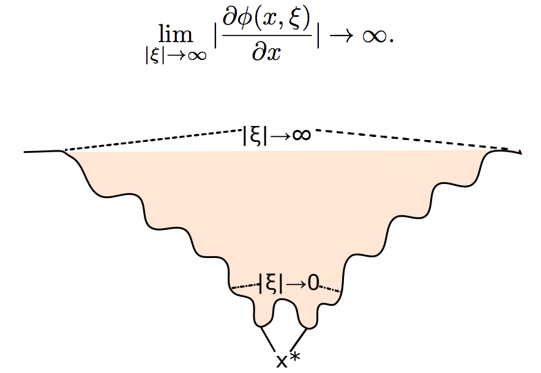
Caglar Gulcehre, Marcin Moczulski, Misha Denil, Yoshua Bengio
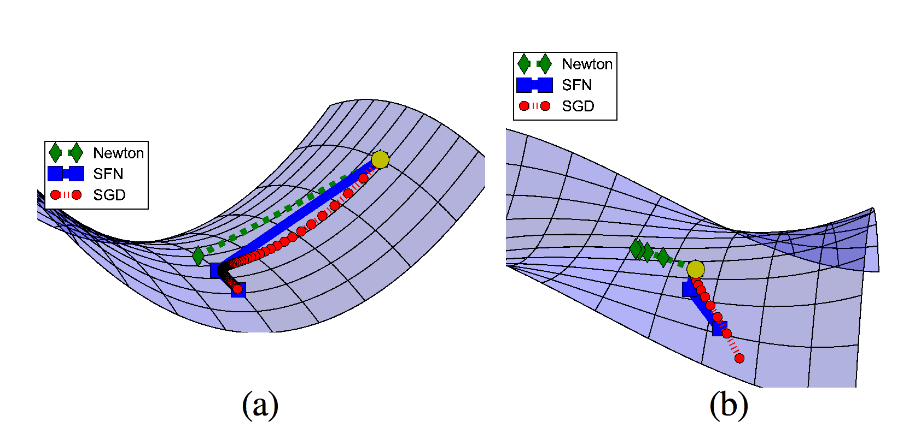
Yann Dauphin, Razvan Pascanu, Caglar Gulcehre, Kyungyhun Cho, Surya Ganguli, Yoshua Bengio
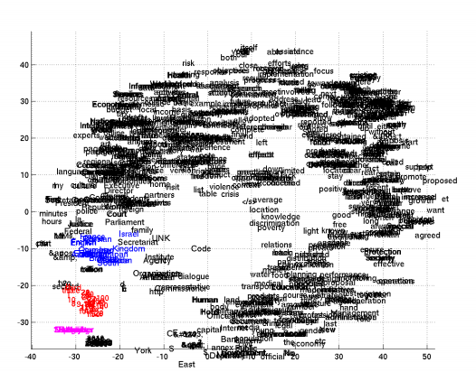
Kyunghyun Cho, Bart van Merrienboer, Caglar Gulcehre, Dzmitry Bahdanau, Fethi Bougares, Holger Schwenk, Yoshua Bengio
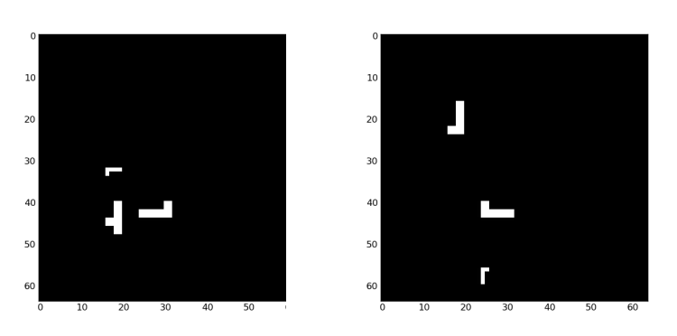
Caglar Gulcehre, Yoshua Bengio
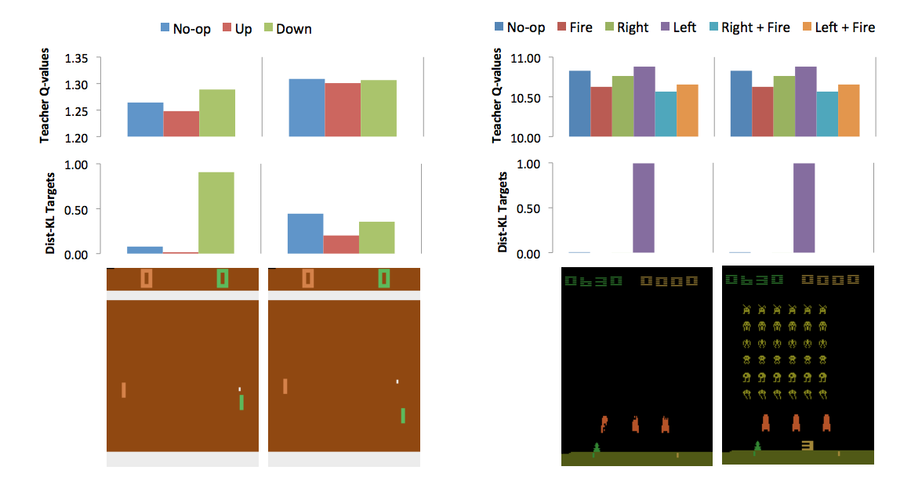
Andrei Rusu, Sergio Gomez Colmenarejo, Caglar Gulcehre, Guillaume Desjardins, James Kirkpatrick, Razvan Pascanu, Volodymyr Mnih, Koray Kavukcuoglu, Raia Hadsell
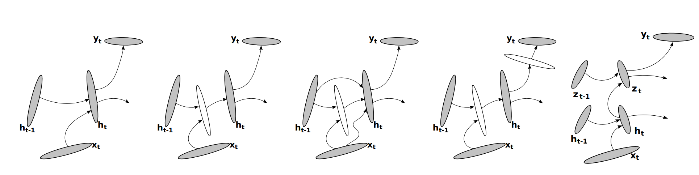
Razvan Pascanu, Caglar Gulcehre, Kyungyhyn Cho, Yoshua Bengio
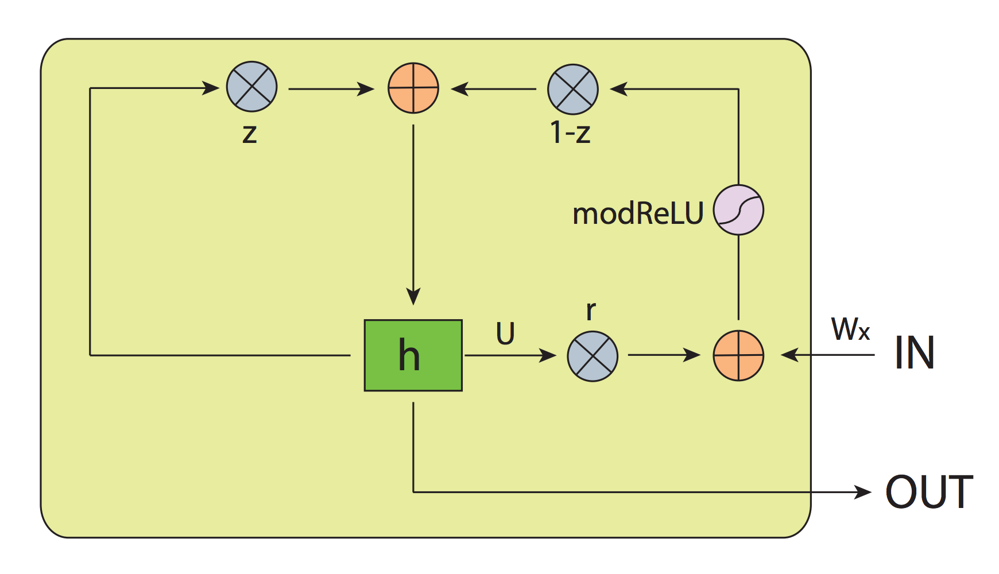
Li Jing+, Caglar Gulcehre+, John Peurifoy, Yichen Shen, Max Tegmark, Marin Soljacic, Yoshua Bengio (+ indicates equal contribution)
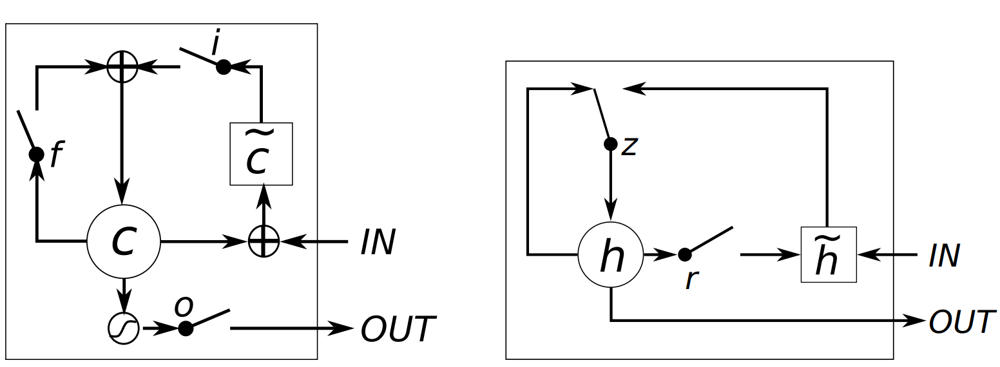
Junyoung Chung, Caglar Gulcehre, Kyungyhun Cho, Yoshua Bengio
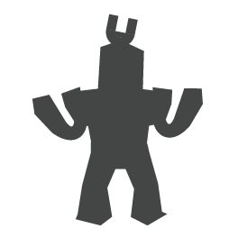